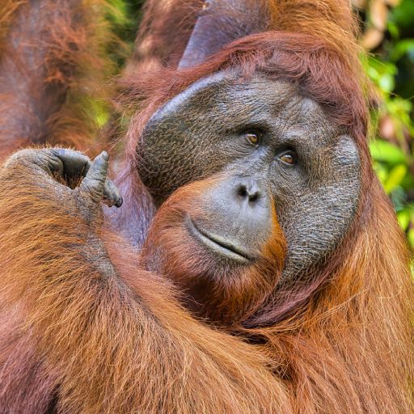
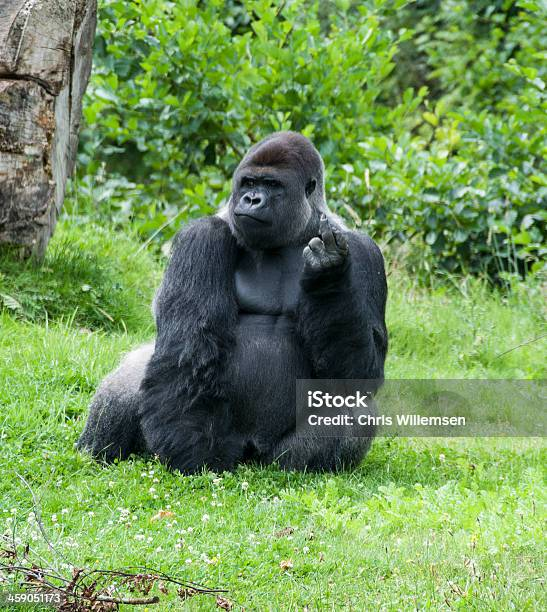
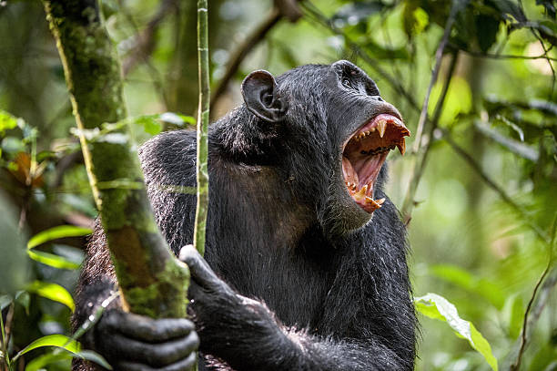
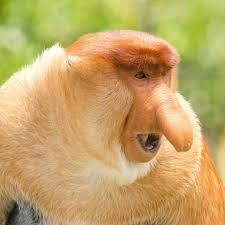
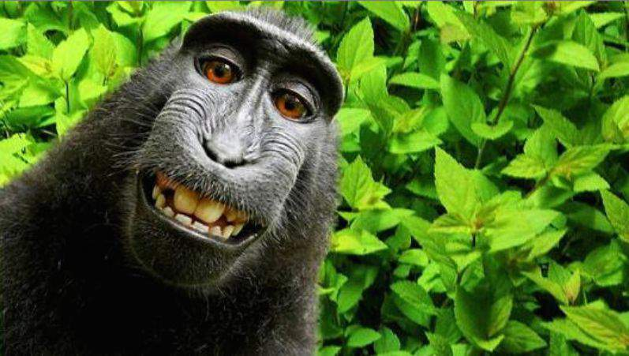

ორანგუტანი

ორანგუტანი (ლათ. Pongo; მალაიური orang-utan, სიტყვასიტყვით — ტყის კაცი[1]) — ძუძუმწოვართა გვარი ადამიანის მსგავსი მაიმუნების ოჯახისა; მისი აზიური განშტოების (ქეოჯახი Ponginae) ერთადერთი თანამედროვე ტაქსონი. ცნობილია 3 სახეობა: კალიმანტანური (ბორნეოს) ორანგუტანი (P. pygmaeus), სუმატრული ორანგუტანი (P. abelii) და ტაპანულის ორანგუტანი (P. tapanuliensis). გავრცელებული არიან მალაის არქიპელაგის (ინდონეზია) კუნძულებზე — კალიმანტანსა და სუმატრაზე. აღწერა სხეულის სიგრძე 1,2–1,5 (იშვიათად 1,8-მდე) მეტრია. მასა დედლისა — 30–50, მამლისა — 50–90 კგ (ტყვეობაში 140 კგ-მდე და მეტი). დღეს მცხოვრები მეხეური ცხოველებიდან ყველაზე დიდებია. წინა კიდურები მიწაზე მცხოვრებ სხვა ადამიანის მსგავს მაიმუნებზე გრძელი აქვთ (ჩამოშვებულ მდგომარეობაში კოჭამდეა), უკანები მოკლეა; განირჩევიან აგრეთვე მოწითალო-ყავისფერი შეფერილობის ბეწვით. თმის საფარი თხელია, თავსა და მხრებზე გრძელი თმებით წარმოქმნილი ფაფარია. ზრდასრულ მამლებს ულვაშები და წვერი აქვთ.[2]
გორილა

გორილა (Gorilla gorilla), მაიმუნი პრიმატების რიგისა. მისი სიმაღლე 175 სმ აღწევს, ხელების შლილი 260 სმ, წონა - 135-180 კგ (ტყვეობაში 300 კგ-მდე). დედალი გაცილებით ნაკლები ზომისაა (იწონის 75-100 კგ, ტყვეობაში 126 კგ-მდე). გორილას ბალანი შავი აქვს, თხემზე წაბლისფერი, ზურგზე სიბერეში უჭაღარავდება. ტვინის ქალას მოცულობა 500-600 (ზოგისა 752) სმ3. ტვინი აგებულებით ადამიანის ტვინს უახლოვდება. ზედა კიდურები ქვედაზე გრძელია. ადამიანთან მსგავსებას ნაწილობრივ განაპირობებს ხმელეთზე ცხოვრების ნირი. გორილა გავრცელებულია ეკვატორულ აფრიკაში. ცხოვრობს ტროპიკულ ტყეებში ხროვებად, რომლებსაც მეთაურობენ ძლიერი მამლები. დადის ოთხ ფეხზე. იკვებება მცენარეთა ნაყოფით, კენკრით და სხვა. მაკეობა 250-290 დღე გრძელდება. ახლად დაბადებული გორილა 2 კგ-მდე იწონის. ცოცხლობს 25-30 წელი. ტყვეობას კარგად იტანს, მრავლდება. სპორტული ნადირობის შედეგად გორილა მრავალ ადგილას მოისპო, ამიტომ ყველგან იცავენ.
შინპანზე

შიმპანზე (Pan) — ადამიანის მსგავსი მაიმუნების გვარი. შიმპანზეები არიან ორი აფრიკული სახეობიდან ერთ-ერთი უდიდესი მაიმუნები, რომლებიც არ გადაშენებულან. თავდაპირველად Pan გვარში გაერთიანებულები, ერთ სახეობად ითვლებოდნენ. თუმცა, 1928 წლიდან ისინი მიიჩნევიან ორ განსხვავებულ სახეობად: ჩვეულებრივ შიმპანზედ (P. Troglodytes), რომელიც მდინარე კონგოს ჩრდილოეთით ცხოვრობს და ჯუჯა-ბონობოდ (P. Paniscus), რომელიც სამხრეთში ცხოვრობს.[1] P. Troglodytes თავის მხრივ ოთხ ქვესახეობად იყოფა. ისინი დაახლოებით მილიონი წლის წინ გაიყარნენ. ყველაზე აშკარა განსხვავება არის ის, რომ შიმპანზეები უფრო დიდები, აგრესიულები არიან, მამრები დომინანტები, ხოლო ბონობო უფრო მშვიდია და მდედრები არიან დომინანტები. შიმპანზეს სახეობა მშობლიურ სამკვიდროში დასავლეთ და ცენტრალურ აფრიკაში ბინადრობს.[2] შიმპანზეები ადამიანების ყველაზე ახლო ნათესავები არიან და გენეტიკური მასალის 98 %-ს იზიარებენ. მიჩნეულია, რომ ადამიანებს და შიმპანზეებს საერთო წინაპარი ჰყავდათ, რომელიც დაახლოებით 8 მილიონი წლის წინ ცხოვრობდა. შიმპანზეები ჩვეულებისამებრ ოთხ ფეხზე გადაადგილდებიან, თუმცა შეუძლიათ ორ ფეხზე სიარულიც. ტოტებზე ძრომიალით კი ხეებზეც, სადაც ძირითადად იკვებებიან, ეფექტურად გადაადგილდებიან. ჩვეულებისამებრ მათ ხეებზე სძინავთ. ზოგადად არიან ხილისა და მცენარეების მჭამელები, მაგრამ ასევე იკვებებიან მწერებს, კვერცხებს და ხორცს. შიმპანზეები იმ იშვიათი ცხოველების რიცხვს მიეკუთვნებიან, რომლებიც იყენებენ იარაღებს. ისინი ფორმას აძლევენ და იყენებენ ჯოხებს, რათა მწერები მათი ბუდეებიდან გამოიყვანონ ან მათლები ამოთხარონ. შიმპანზეებს ასევე ადამიანებისათვის დამახასიათებელი რამდენიმე ნიშანი აქვთ. მდედრებს შეუძლიათ შვილების გაჩენა წლის ნებისმიერ დროს. მდედრების რეპროდუქციული ასაკი 13 წელია, ხოლო მამრები ზრდასრულებად 16 წლის ასაკში მიიჩნევიან. მიუხედავად, უდიდესი მსგავსებისა, შიმპანზეებს ადამიანები ძალიან აზარალებენ. ისინი კვლავაც საფრთხეში არიან მონადირეების მიერ და საცხოვრებლის განადგურების გამო.[3]
ცხვირა მაიმუნი

ცხვირა მაიმუნი (Nasalis larvatus) — ძუძუმწოვარი ცხოველი ანთრისებრთა ოჯახისა. მისი სხეულის სიგრძე 55-75 სმ, მასა 12-24 კგ აღწევს. აქვს ძალზე გრძელი ცხვირი (აქედან სახელწოდება), რომელიც უფრო განვითარებული აქვს მამალს. ცხვირა მაიმუნის ბეწვი ხშირია. თავი, მხრები, ზურგი და კიდურების ზედა ნაწილები აგურისფერ-წითელია, სხეულის დანარჩენი ნაწილები — მონაცისფრო. გავრცელებულია კუნძულ კალიმანტანზე. ცხოვრობს ტყეში, მეხეური ცხოველია, იკვებება უმთავრესად ფოთლებით, ნაყოფით. კარგად ცურავს. ქმნის 20-მდე ინდივიდისაგან შემდგარ ხროს.
მაკაკი

მაკაკი (Macacus) — ცხვირვიწრო მაიმუნების გვარი ანთრისებრთა ოჯახისა. აქვთ საჯდომი კორძები. მათი სხეულის სიგრძე 34-65 სმ, კუდი — 5-70 სმ, მასა 3,5-18 კგ აღწევს. ცნობილია 12 სახეობა, რომელთაგან მაგოტი გვხვდება გიბრალტარზე, მაროკოში, ალჟირსა და ტუნისში, ხოლო დანარჩენი — სამხრეთ აზიაში. ბინადრობენ მიწაზე ან ხეებზე. იკვებებიან მცენარეთა ნაყოფით, ზოგი ჭამს კიბოებს, მოლუსკებს, მწერებს. ცხოვრობენ ჯოგებად შობენ თითო ნაშიერს.